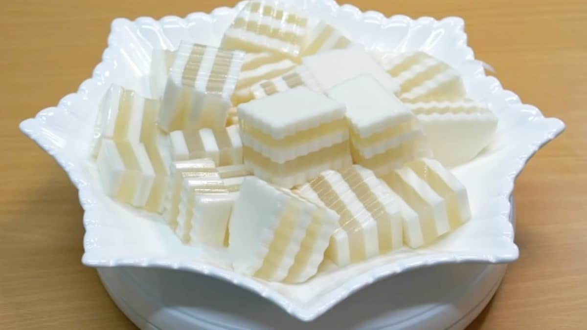

cách làm rau câu dừa Rau câu dừa là món tráng miệng quen thuộc và được nhiều người yêu thích bởi hương vị thơm béo của nước dừa và độ dai giòn của rau câu. Để làm món rau câu dừa tại nhà, bạn có thể tham khảo các cách làm dưới đây: Nguyên liệu chung: Bột rau câu: Chọn loại bột rau câu dẻo hoặc giòn tùy theo sở thích. Nước dừa tươi: Nên chọn loại nước dừa tươi nguyên chất để rau câu có vị thơm ngon tự nhiên. Đường: Tùy chỉnh lượng đường theo khẩu vị. Muối: Một chút muối sẽ giúp tăng thêm hương vị cho món rau câu. Lá dứa: Tùy chọn, giúp rau câu có mùi thơm đặc trưng. Khuôn: Có thể sử dụng khuôn hình chữ nhật, khuôn tròn hoặc khuôn hoa tùy thích. Cách làm cơ bản: Pha bột rau câu: Trộn đều bột rau câu với một lượng nước dừa vừa đủ, để bột tan đều. Đun sôi: Cho hỗn hợp bột rau câu và nước dừa lên bếp, đun sôi vừa lửa, vừa khuấy đều. Thả lá dứa: Nếu sử dụng lá dứa, bạn có thể buộc lá dứa lại rồi thả vào nồi rau câu đang đun. Đổ vào khuôn: Sau khi rau câu sôi, tắt bếp, để nguội một chút rồi đổ vào khuôn. Làm lạnh: Cho khuôn rau câu vào tủ lạnh để đông cứng.


Bình luận